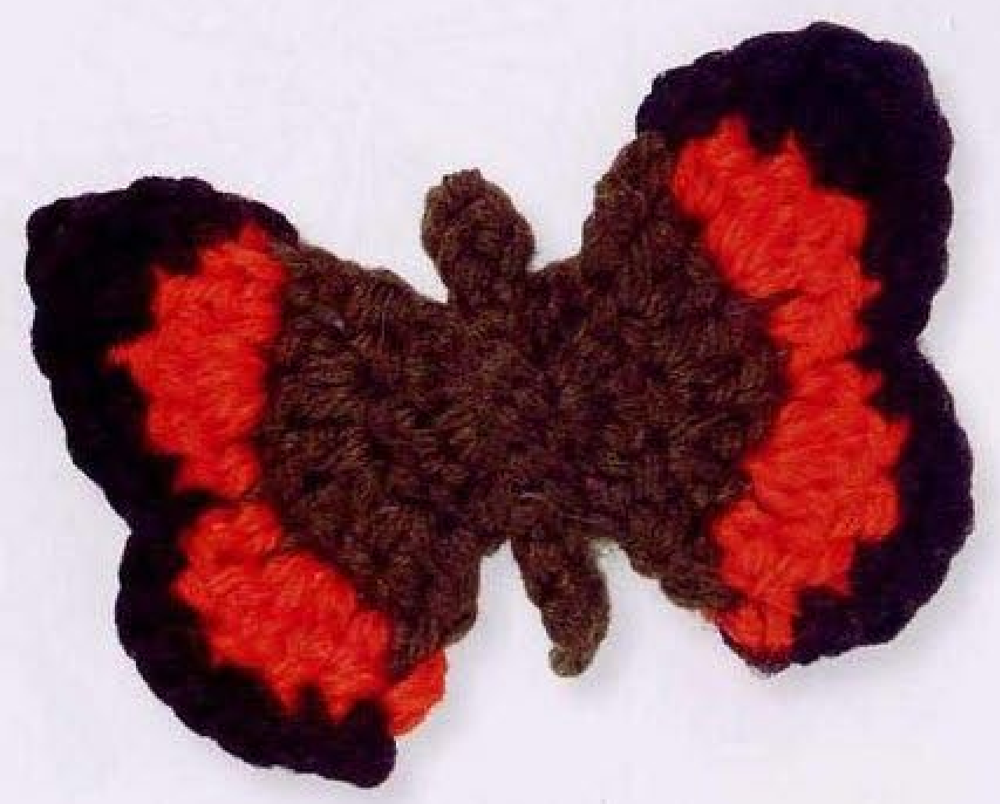
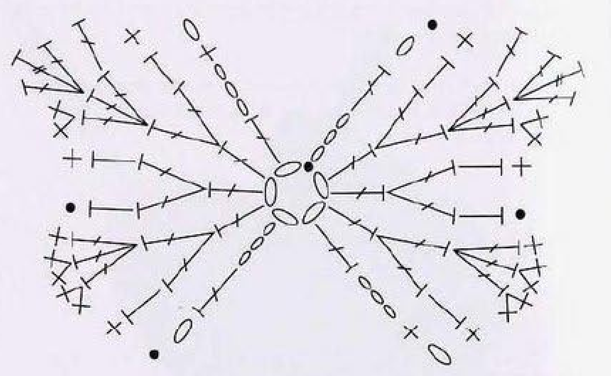
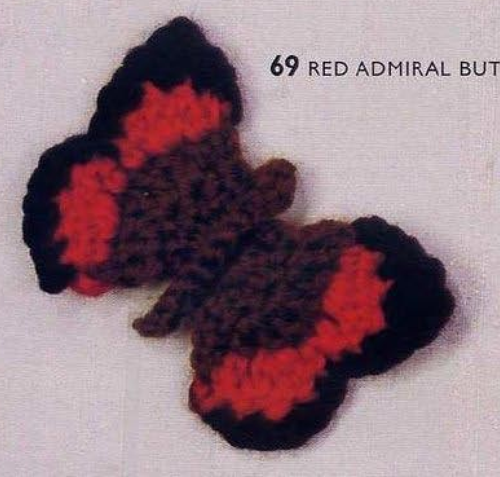
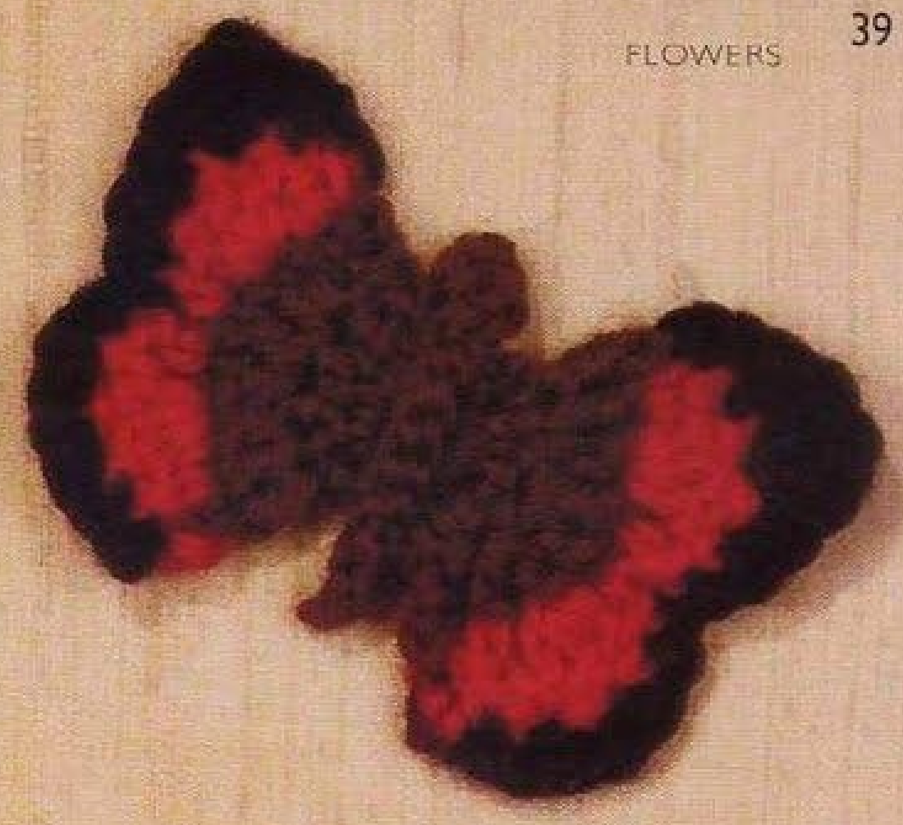

Crochet Red Admiral Butterfly has khaki inner wings, a bright orange band, and black outer edging. Two wing pairs share a small chain-ring foundation, with different final edge rows to shape the outline. A separately made khaki body is stitched over the center join. This guide follows pattern 69 in Lesley Stanfield’s 100 Flowers to Knit & Crochet, preserving both wing recipes and assembly in US terms.

Key Takeaways
- Use DK wool in khaki A, orange B, and black C.
- The first three wing rows have 5, 8, and 12 counted positions.
- Change colors on the final wrap of the named stitches before the row-end stitches.
- Each wing pair has its own distinct black row 4.
- The middle indentation includes a slip stitch under three strands of a half double.
- Make the khaki body separately and sew it over the center join.
CROCHET RED ADMIRAL BUTTERFLY PATTERN
Project: One butterfly with two shaped wing pairs and a separately sewn body. US terminology is used below. Hook, gauge, overall quantity, and finished dimensions are not specified in the entry.
| Skill level | Intermediate source section. Practical focus: short shaped rows, timed color changes, mirrored edge routes, and center assembly. |
|---|---|
| Base size | 1 butterfly with 2 wing pairs and 1 body. Measurements are not specified. |
| Yarn | DK wool: khaki A, orange B, black C. |
| Quantity, hook, gauge | Not specified. Choose a hook suited to the wool and check a wing-pair sample. |
| Notions | Scissors and a blunt needle for joining the wings and sewing the body over the center. |
| US abbreviations | ch = chain; sc = single crochet; hdc = half double crochet; dc = double crochet; tr = treble crochet; sl st = slip stitch; WS = wrong side. UK dc = US sc; UK htr = US hdc; UK tr = US dc; UK dtr = US tr. |
| First wing-pair foundation | With A, ch 5 and join with a sl st into a ring. |
| Wing row 1, WS | Ch 3, 4 dc in the ring. 5 counted positions. |
| Wing row 2 | Ch 3, 2 dc in each of the next 3 dc, working the last wrap with B; dc in the top chain of the preceding ch 3. 8 counted positions. Continue B. |
| Wing row 3 | Ch 1, hdc in the next dc, 3 dc in the next dc, hdc in each of the next 2 dc, 3 dc in the next dc, hdc in the next dc, working its last wrap with C; sc in the top chain of the preceding ch 3. 12 counted positions. Continue C. |
| First pair, row 4 | Ch 1, sc in the hdc, 2 sc in each of the next 2 dc, sc in the next dc; sl st under 3 strands of the next hdc; sc in the next hdc, 2 sc in the next dc, (dc, tr, dc) in the next dc, dc in the next dc, sc in the hdc, sl st in the starting ch 1. Fasten off invisibly. |
| Second wing pair, rows 1–3 | With WS facing, join A in the same 5-chain ring and work rows 1–3 as for the first pair. |
| Second pair, row 4 | Ch 1, sc in the hdc, dc in the next dc, (dc, tr, dc) in the next dc, 2 sc in the next dc; sc in the next hdc; sl st under 3 strands of the next hdc; sc in the next dc, 2 sc in each of the next 2 dc, sc in the hdc, sl st in the starting ch 1. Fasten off invisibly. |
| Body | With A, ch 10, skip 2 chains, sc in the next chain, ch 1, sl st in each of the remaining 7 chains. Fasten off. |
| Assembly | Join the wings in the center and stitch the body over the join. No separate antenna recipe, spots, or additional wing layer is supplied. |
Understand the Wing Pairs and Shared Center
The small five-chain ring supports the first wing pair. The second pair is worked by joining khaki in that same ring with the wrong side facing. This creates the complete wing structure around one central foundation, rather than four independently made wings with separate rings.
Both pairs share the first three row recipes. Their final black rows differ in the order of shorter increases and the taller three-stitch group. That variation creates the larger and smaller outer lobes on opposite ends of the wing shape.
The body is made separately in khaki and stitched over the joined center. The source supplies its ten-chain start and slip-stitch return, but no separate antenna sequence or decorative spots. Keep the visible orange band and black edge as crochet color sections rather than adding painted markings to imitate a natural insect.
Gather DK Wool and Finishing Tools
Use DK wool in khaki A, orange B, and black C. Khaki forms the first two rows and the body, orange develops the band through the next shaped row, and black supplies the outer edge. Have all three available before starting the wing rows so the timed changes can be made at their named stitches.
No hook size, numerical gauge, overall wool quantity, or finished butterfly measurements are provided. Choose a hook appropriate to your wool and examine a completed wing pair. The fabric should hold its graduated edge while staying flexible enough to join neatly at the center.
Keep scissors and a blunt needle ready for the center join, body attachment, and end securing. If you need the butterfly to fit a measured applique area, finish one complete sample before preparing multiple copies. A yarn category alone does not guarantee the same final wingspan with every wool and tension.
Translate the Stitch Heights and Color Changes
The book’s UK double crochet becomes US single, half treble becomes half double, treble becomes double, and double treble becomes treble. The longest stitch in the black three-stitch edge group is therefore a US treble, with two US doubles beside it.
The phrase last wrap means completing the named stitch with the next color. In row 2, complete the last double of the paired-increase section with B before making the row-end double. In row 3, complete the final half double with C before working the row-end single.
These changes place the new working color on the hook in time for the row-end stitches. Do not wait until the next row’s first chain to change colors by habit. That would move the color transition away from the placements printed in the source.
Color checkpoint: Orange is introduced on the last wrap of row 2’s last increase double. Black is introduced on the last wrap of row 3’s final half double, before its row-end single.
Step 1: Establish the First Five-Position Wing Row
With A, chain five and join with a slip stitch into a ring. With the wrong side facing, chain three and work four US doubles into the ring. The source counts five positions: the rise and four actual doubles.
These are rows, so do not add a round-closing slip stitch after the four doubles. The next line returns across the short row. Keep the top of the starting three-chain rise visible, because later rows explicitly use that row-end chain as a stitch base.
The printed sequence does not insert the word turn at every row, but the following next-stitch and starting-chain placements return along the row. Reorient the work as needed to follow those placements. Do not continue circling the foundation ring as though each line were another joined round.
Step 2: Increase to Eight Positions in Row 2
Chain three and work two doubles in each of the next three actual doubles. There are six actual doubles in that increase section. Complete the final wrap of the last one with orange B, then work one double in the top chain of the preceding three-chain rise.
The resulting total is eight counted positions: the new rise, six increased doubles, and the final row-end double. The last stitch belongs to a chain-rise top rather than an additional actual double. Count the row before beginning the more varied shaping in orange.
Keep the paired increases together at their stated bases. Making six doubles all in one base or one double in each of six invented bases changes the fan shape. The rise and row-end chain define the limits of this small expanding row.
Step 3: Shape the Twelve-Position Orange Row
Chain one, then work a half double in the next double. Work three doubles in the next double, one half double in each of the next two doubles, three doubles in the next double, and one half double in the next double. Complete that last half double with black C.
Work one single in the top chain of the preceding three-chain rise. The source counts twelve positions in this row, including its opening chain. The two three-double groups develop fullness at the outer parts of the wing pair, while the intervening half doubles support the lower central section.
Do not turn the three-double groups into clusters. Each contains three completed doubles in one base, with three separate tops available for the next row. Check both groups and the two adjacent central half doubles before adding the black outline.
Row checkpoint: The first three rows have five, eight, and twelve counted positions. The twelve-position row combines chain one, four half doubles, six actual doubles, and a final single.

Step 4: Begin the First Black Edge Row
Chain one with C and work one single in the half double. Work two singles in each of the next two doubles, then one single in the next double. This first edge section uses the actual tops of the orange three-double group.
Slip stitch under three strands of the next half double. The source names three strands rather than an ordinary two-strand top-only insertion. Locate that half double carefully and follow the wider strand pickup so the center indentation is placed correctly.
The slip stitch is a low anchor within the shaped edge, not a skipped stitch or an extra chain bridge. Keep it small enough to make the indentation without tightening the neighboring half doubles into an unreadable knot.
Step 5: Complete the First Pair’s Taller Edge Section
After the three-strand slip stitch, work a single in the next half double. Work two singles in the next double, then double, treble, and double together in the next double. Work one double in the next double and one single in the half double.
Slip stitch into the starting chain one and fasten off invisibly. The taller three-stitch group has two completed US doubles around one US treble in a shared base. It shapes the larger lobe on this end of the pair without adding another orange row.
Keep the entire row-4 order distinct from the second pair’s edging. The first pair begins with the two paired-single increases and reaches its taller group after the central indentation. Copying one edge row twice would change the relationship of the finished upper and lower wing lobes.
The Black Rows Are Related but Different
Both wing pairs use the same first three rows, but their black edges place the taller double-treble-height shaping on opposite sides of the central indentation. In US terms that shared-base group is dc, tr, dc. Follow each printed row separately instead of repeating the first edge unchanged for the second pair.
Step 6: Work the Second Pair in the Same Ring
With the wrong side facing, join A in the five-chain foundation ring. Work rows 1, 2, and 3 as for the first pair, including the five-, eight-, and twelve-position totals and the timed changes to orange and then black.
Keep the first pair out of the way while entering the ring for the new stitches. The second pair belongs in the same named foundation, not a newly made chain ring beside it. Follow the row-end rises carefully so the second pair retains the same basic shaped fabric.
Compare the first three rows of both pairs before edging the second. The orange groups and central half doubles should have the same sequence. Differences in those foundation rows cannot be corrected simply by changing the black edge placement.
Step 7: Follow the Second Pair’s Own Black Row
Chain one, work a single in the half double, then one double in the next double. Work double, treble, and double together in the next double, followed by two singles in the next double. Work a single in the next half double.
Slip stitch under three strands of the next half double. After this indentation, work one single in the next double, two singles in each of the next two doubles, then one single in the half double. Slip stitch into the starting chain one and fasten off invisibly.
Notice that the instruction after the central slip stitch names the next double, whereas the corresponding earlier first-pair route names the next half double. Preserve the two printed sequences and use the chart to follow their positions. Do not rewrite that stitch label merely to make the prose look symmetrical.
Second-edge checkpoint: Its taller group is worked before the central three-strand slip stitch. After that slip stitch, the source names a single in the next double, followed by paired singles in the next two doubles.

Step 8: Make the Separate Khaki Body
With A, chain ten and skip two chains. Work one single in the next chain, chain one, then slip stitch in each of the remaining seven chains. Fasten off. The body combines a small single-and-chain section with a narrower slip-stitch return.
Count the seven remaining chain placements rather than adding a new chain foundation after the single. The body is a separate flat piece, not a stuffed tube or a long black cord. Its khaki color matches the inner wing fabric in the original specification.
The source does not add a separate antenna sequence. Do not interpret the skipped two chains or the later chain one as permission to crochet two long new antenna branches. Preserve the named body recipe and use the finished photo for its overall placement.
Step 9: Join the Center and Cover It with the Body
Join the wings in the center and stitch the body over the join. Arrange the two wing pairs so the graduated orange bands and black outer edges form the complete butterfly outline before securing the center. Keep the central indentation visible rather than flattening all four lobes together.
Position the khaki body along the center, covering the joining area as stated. Sew through stable body and center stitches without dragging the body across a bright orange band. Inspect front and back, then secure the ordinary ends after the alignment is satisfactory.
The book gives no numerical sewing-stitch count or separate measured body placement. Use the named center relationship and finished source examples instead of inventing a prescribed seam length. The body should cover the join while leaving the colored wing surfaces visible.

Troubleshoot the Butterfly Shape
Both ends of a wing pair look identical
Review the black edging recipes. The first pair has paired-single increases before the indentation and its taller group afterward; the second places the taller group earlier. Repeating one row-4 recipe for both pairs changes the intended balance of the outline.
The orange band starts or ends in the wrong place
Check the last-wrap color changes before the row-end stitches. Orange is already used for row 2’s final double, and black is already used for row 3’s final single. Delaying either change to the next opening chain moves the visible transition.
The center becomes bulky
Locate the named half double and its three-strand slip stitch in each edge row. An extra chain, wrong base, or very tight join can distort this low section. Correct the stitch route before sewing the body over it, rather than hiding an incorrect edge under a wider improvised body.
Optional Colors and Applique Placement
Other wool shades can be optional substitutions while retaining the three color roles and all original row placements. Adding naturalistic spots, antennae, extra wing layers, or a contrasting body is an adaptation rather than part of this entry. Keep those choices separate from the supplied Red Admiral recipe.
Suggested uses include a sewn butterfly applique on a bag or textile panel. These are added placement ideas, not complete accessory projects supplied here. Attach through stable back or center stitches and test the finished outline on the surface before fixing the wing tips in place.
Red Admiral Butterfly at a Glance
- DK wool in khaki, orange, and black.
- Two wing pairs sharing one five-chain ring.
- Five-, eight-, and twelve-position foundation rows.
- Two distinct black edge rows with three-strand central slip stitches.
- Separate ten-chain khaki body stitched over the center join.
Conclusion
Red Admiral Butterfly depends on timed color changes and two carefully followed outer rows. Work both wing pairs from the same center ring, preserve the different edge routes, and finish with the khaki body over the join. The compact card contains the complete source construction in US terms. Click the Pin to see the pattern again and use the chart while shaping your butterfly.
Source and Tags
Source: Lesley Stanfield, 100 Flowers to Knit & Crochet, pattern 69 Red Admiral Butterfly. Instructions and chart are on printed page 84, PDF page 78; directory examples are on printed pages 32 and 39, PDF pages 27 and 34. All photographs show completed work. US translation and additional practical guidance accompany the original wing and body recipes.
Red Admiral ButterflyCrochet ButterflyWool AppliqueShaped Wing RowsColor ChangesUS Crochet Terms